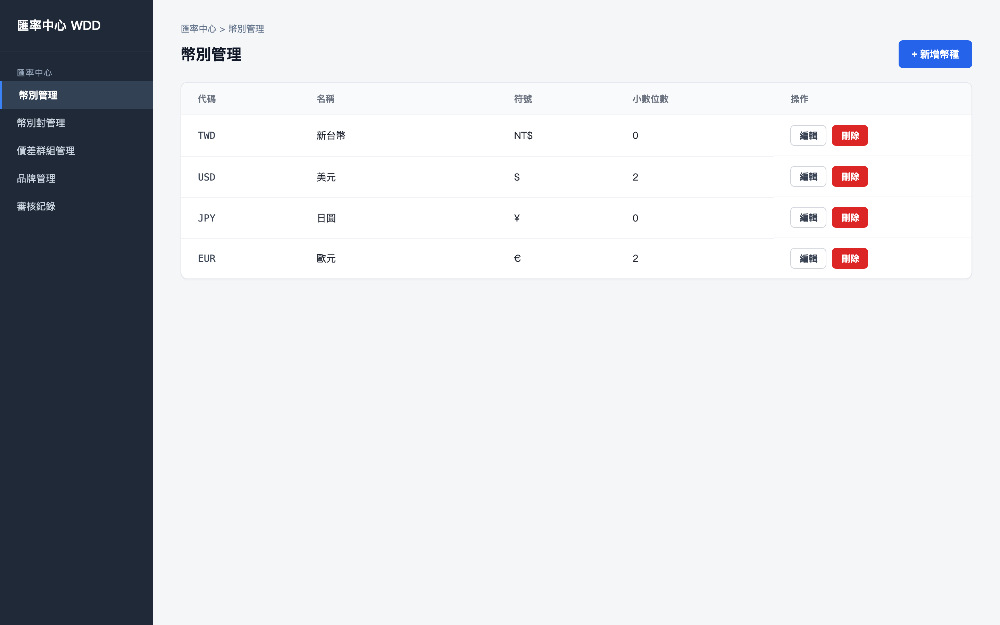
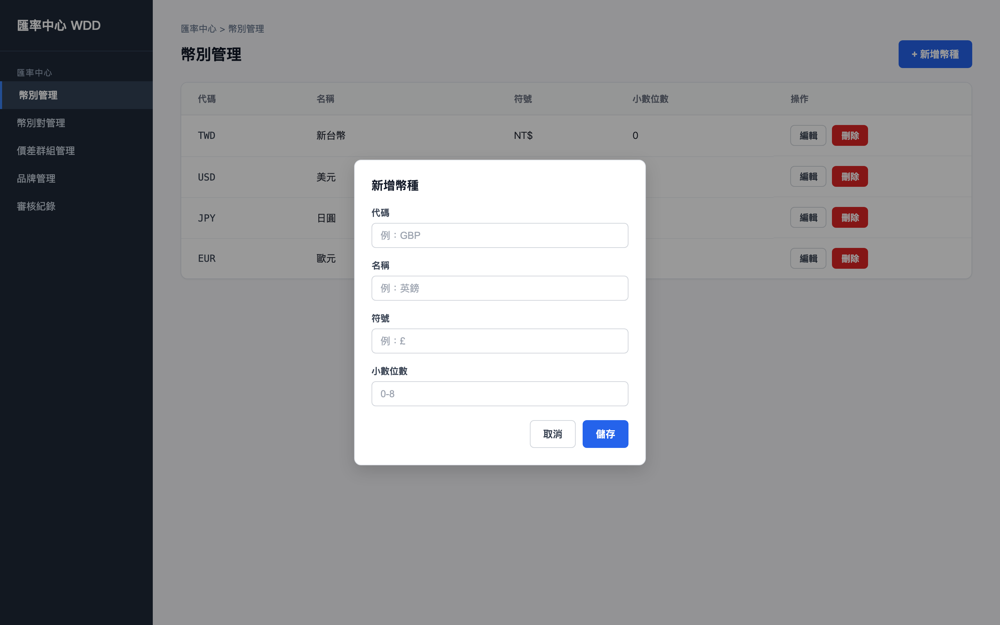
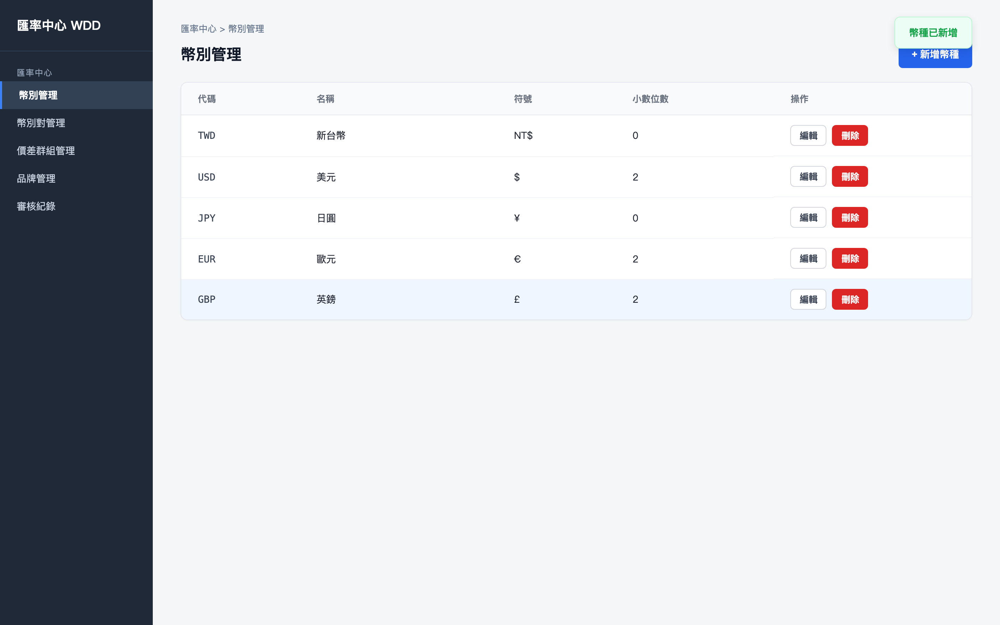
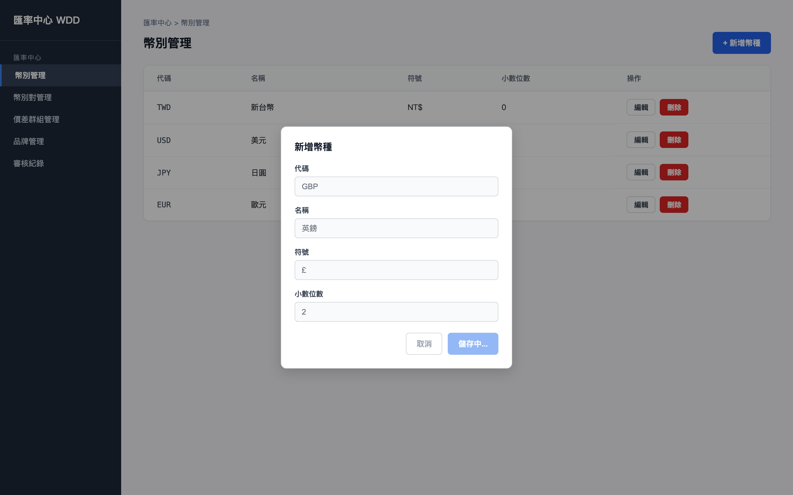

初始畫面：載入 GET /api/currencies，列出四個幣種（TWD、USD、JPY、EUR）。

點擊「+ 新增幣種」按鈕：開啟新增幣種表單（代碼／名稱／符號／小數位數均為空）。
填入表單：代碼 GBP、名稱英鎊、符號 £、小數位數 2，準備點擊「儲存」。

請求成功：關閉表單，新增 GBP 幣種列於表格最後一列，並顯示成功提示「幣種已新增」。

點擊「儲存」：呼叫 POST /api/currencies，表單欄位鎖定、按鈕顯示「儲存中...」。